<meta charset="utf-8"><title>11/25のコラム note貼り付け</title>
<style>
/* one column of numbered paste steps; text steps vs image steps differ by marker */
:root{--bg:#F5F4F0;--card:#FFFFFF;--ink:#1D2321;--mute:#5F665F;--line:#DCDAD2;--btn:#1F5FBF;--btnok:#2E8B4F;--img:#E9F3EC;--imgink:#22663B;--sans:'IBM Plex Sans JP','Hiragino Sans','Noto Sans JP',sans-serif}
@media (prefers-color-scheme:dark){:root:not([data-theme="light"]){--bg:#171A19;--card:#202423;--ink:#ECEDE8;--mute:#A3AAA2;--line:#343937;--btn:#4D8BE6;--btnok:#3FA866;--img:#1E2C23;--imgink:#8FD3A6;color-scheme:dark}}
:root[data-theme="dark"]{--bg:#171A19;--card:#202423;--ink:#ECEDE8;--mute:#A3AAA2;--line:#343937;--btn:#4D8BE6;--btnok:#3FA866;--img:#1E2C23;--imgink:#8FD3A6;color-scheme:dark}
body{background:var(--bg);color:var(--ink);font-family:var(--sans);font-size:15px;line-height:1.75;padding:20px 16px 60px}
main{max-width:680px;margin:0 auto;display:grid;gap:28px}
header h1{font-size:22px;margin:0 0 6px;text-wrap:balance}
header p{margin:0;color:var(--mute);font-size:14px}
nav{display:flex;gap:8px;flex-wrap:wrap;margin-top:12px}
nav a{border:1px solid var(--line);border-radius:999px;padding:4px 14px;color:var(--ink);text-decoration:none;font-size:14px;background:var(--card)}
.part h2{font-size:18px;line-height:1.5;margin:0 0 12px;text-wrap:balance;display:flex;gap:10px;align-items:baseline;flex-wrap:wrap}
.tag{font-size:13px;background:var(--ink);color:var(--bg);border-radius:6px;padding:1px 9px}
.steps{list-style:none;margin:0;padding:0;display:grid;gap:12px}
.st{background:var(--card);border:1px solid var(--line);border-radius:12px;padding:12px;min-width:0}
.hd{display:flex;align-items:center;gap:8px;margin-bottom:8px}
.no{width:26px;height:26px;border-radius:50%;background:var(--btn);color:#fff;display:inline-flex;align-items:center;justify-content:center;font-size:13px;font-weight:700;flex:0 0 26px}
.im .no{background:var(--btnok)}
.hd em{font-style:normal;font-size:12px;background:var(--img);color:var(--imgink);border-radius:6px;padding:0 8px}
.bx{font-size:13.5px;line-height:1.7;border:1px solid var(--line);border-radius:8px;padding:8px 10px;max-height:110px;overflow:auto;overflow-wrap:anywhere}
.bx.tall{max-height:150px}.bx p{margin:0 0 6px}.bx h2{font-size:14px;margin:8px 0 4px}.bx a{color:var(--btn)}
.st img{display:block;width:100%;max-width:100%;border:1px solid var(--line);border-radius:8px}
.sub{font-size:12.5px;color:var(--mute);margin:6px 0 0}
.cp{width:100%;margin-top:8px;padding:12px;border:0;border-radius:10px;background:var(--btn);color:#fff;font:600 15px var(--sans);cursor:pointer}
.cp.ok{background:var(--btnok)}.cp.dl{background:var(--btnok)}.cp:focus-visible{outline:3px solid var(--ink);outline-offset:2px}
.xh{font-size:15px;margin:20px 0 10px}
.fb{font-size:13px;line-height:1.7;margin:8px 0 0;padding:8px 10px;border-radius:8px;background:var(--img);color:var(--imgink)}
.opts{display:grid;grid-template-columns:repeat(auto-fill,minmax(240px,1fr));gap:10px}
.opt{min-width:0}.opt img{display:block;width:100%;border:1px solid var(--line);border-radius:8px}
.ol{display:flex;align-items:center;gap:8px;margin-top:6px}.ol b{font-size:13px;flex:0 0 auto}.ol .on{font-size:12.5px;color:var(--mute);flex:1;min-width:0}.ol .cp{width:auto;flex:0 0 auto;padding:9px 14px}.ol .cp{margin:0;padding:9px}
.toast{font-size:13px;color:var(--mute);margin-top:6px}
</style>
<main><header><h1>11/25のコラム note貼り付け</h1><p>いま公開済みは7本です。青い番号は文章、緑は画像です。</p><nav><a href="#p1">1</a><a href="#p2">2</a><a href="#p3">3</a><a href="#p4">4</a><a href="#p5">5</a><a href="#p6">6</a><a href="#p7">7</a></nav></header><section class="part" id="p1"><h2><span class="tag">OFF GRID</span>ストロール「ホンダは馬力を見つけないと」　直線の差は約2秒</h2><p class="sub">サイトに公開：12:11</p><ol class="steps">
<li class="st im"><div class="hd"><span class="no">1</span><b>見出し画像</b><em>画像</em></div>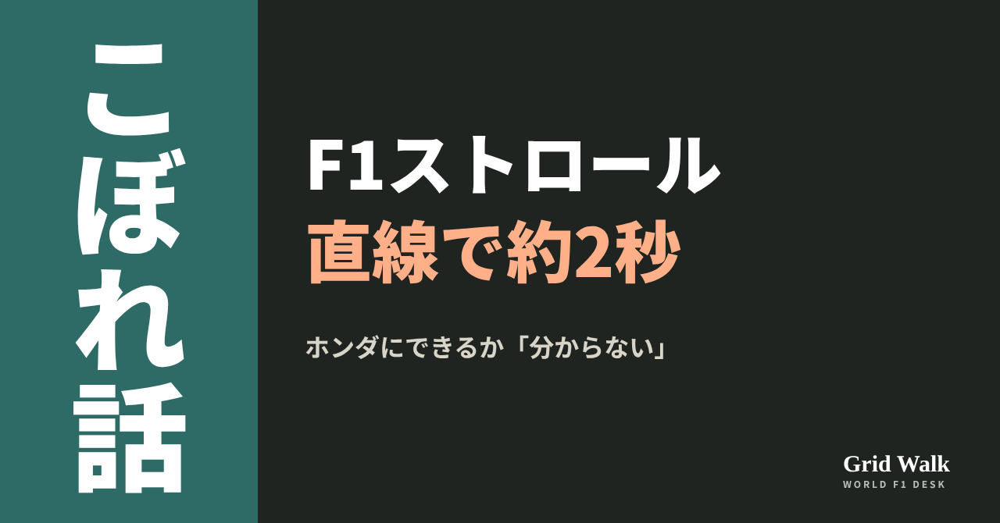<button class="cp dl" data-img="img/stroll-honda-two-seconds-20261125.png" data-name="stroll-honda-two-seconds-20261125_見出し画像.png">ダウンロード</button></li>
<li class="st"><div class="hd"><span class="no">2</span><b>タイトル</b></div><div class="bx" id="p1t">ストロール「ホンダは馬力を見つけないと」　直線の差は約2秒</div><button class="cp" data-plain="p1t">タイトルをコピー</button></li>
<li class="st"><div class="hd"><span class="no">3</span><b>本文</b></div><div class="bx tall" id="p1r"><p>ラスベガスGPを終えて、アストンマーティンのランス・ストロールがホンダに求めたのは、直線での約2秒でした。イギリスのPlanetF1が11月24日に伝えています。レースのあと、ストロールはこう話しました。</p><p>元の記事へのリンクと、ストロールの今季を追った読み解きへの案内はサイトで → <a href="https://f1gridwalk.github.io/lens/stroll-honda-two-seconds-20261125/?utm_source=note&amp;utm_campaign=stroll-honda-two-seconds-20261125">https://f1gridwalk.github.io/lens/stroll-honda-two-seconds-20261125/?utm_source=note&amp;utm_campaign=stroll-honda-two-seconds-20261125</a></p><blockquote><p>「直線で2秒くらいは見つけないといけない。だからホンダは馬力を見つけないと」（ストロール、PlanetF1／イギリス）</p></blockquote><p>ホンダにそれができると思うか。そう聞かれた答えは、ひとことでした。</p><blockquote><p>「分からない」（ストロール、PlanetF1／イギリス）</p></blockquote><p>サイトの要約は https://f1gridwalk.github.io/news/en-planetf1-stroll-honda-two-seconds/ にあります。</p><h2>週末の前の見通しと、同じ数字</h2><p>2秒という数字は、週末の前にも出ていました。水曜日の記者会見で、ストロールは直線だけで2秒くらい負けそうだと話しています（コラム https://f1gridwalk.github.io/lens/stroll-underpowered-20261120/ ）。PlanetF1は、予選でアストンマーティンの2台がキャデラックとともに後ろに取り残されたと書いています。F1公式の結果では、ストロールは50周を走り切って17位、0点でした。チームメイトのフェルナンド・アロンソは49周でDNF（リタイア）となり、19位に数えられています。</p><p>ゴールまで行けたことに意味はあるか。そう聞かれて、ストロールは信頼性の話をしました。</p><blockquote><p>「こういう状況では、信頼性はもちろん大事だ」「今季、僕たちはバッテリーで10回か12回はDNFになったと思う」「今日はゴールまで行けた。だから、うん、励みになる」（ストロール、PlanetF1／イギリス）</p></blockquote><h2>アロンソは、コーナーで取り返していた</h2><p>アロンソの見積もりは、もっと大きなものでした。PlanetF1によると、アロンソは差が3秒にもなりうると見ていて、レースのあとの取材でこう話しています。</p><blockquote><p>「予選で、もうエンジンが足りないのは見えていた。レースも、最初から最後まで足りなかったと思う」「直線では2秒か3秒負けていた」「コーナーでは2秒稼いでいて、あとは前の車の列についていこうとしていただけだ」（アロンソ、PlanetF1／イギリス）</p></blockquote><blockquote><p>「クルマはコーナーではとても良かった。まわりで争っている相手より、ずっと良かった」（同）</p></blockquote><p>直線については、今年いちばん悪いレースだったかもしれない、とも話しています。PlanetF1によると、アロンソはゴール目前にエンジンのトラブルでリタイアしました。何が起きたのかについて、HRCの折原伸太郎GMはこう話しています。</p><blockquote><p>「今のところ、データでは何の問題も見ていません」「でも、すべてのデータを注意深く調べる必要がありますし、メンテナンスのときにエンジンも確かめます」（折原、PlanetF1／イギリス）</p></blockquote><h2>残り2戦、ウィリアムズまで9点</h2><p>F1公式の順位表では、アストンマーティンはコンストラクターズ10位で7点、9位のウィリアムズは16点で、差は9点です。ウィリアムズはラスベガスでカルロス・サインツが8位に入り、4点を足しました。残るのは11月27〜29日の第22戦カタールGPと、12月4〜6日の第23戦アブダビGPです。</p><p>編集部としては、週末の前の見通しとレースのあとの注文で、同じ約2秒という数字が出たことが大事だと見ています。週末の前の見通しが、レースを終えても変わらなかったことになります。ホンダにできるかと聞かれて「分からない」とだけ答えたことも、差の大きさを物語っていると見ています。今季のストロールは、読み解き https://f1gridwalk.github.io/topics/stroll-sometimes-almost-dangerous/ で。</p><p><strong>直線で約2秒。ホンダはこの差を、来季の開幕までにどこまで縮められると思いますか？</strong></p><p>━━━━━━━━━━</p><p><strong>F1 Grid Walk では、世界のF1ニュースを毎日日本語でまとめています。</strong></p><p>海外の記事の要約を、毎日載せています。</p><p><a href="https://f1gridwalk.github.io/">https://f1gridwalk.github.io/</a></p><p>ほかの海外記事も読みたい方は、F1 Grid Walkへ。</p><p><a href="https://f1gridwalk.github.io/lens/stroll-honda-two-seconds-20261125/">https://f1gridwalk.github.io/lens/stroll-honda-two-seconds-20261125/</a></p><p>━━━━━━━━━━</p><p><a href="https://www.planetf1.com/news/lance-stroll-honda-deficit-f1-2026-las-vegas-grand-prix">出典：PlanetF1（イギリス）</a></p><p><a href="https://www.formula1.com/en/results/2026/races/1300/las-vegas/race-result">出典：F1公式サイト（イギリス）</a></p><p><a href="https://www.formula1.com/en/results/2026/team">出典：F1公式サイト（イギリス）</a></p><p><a href="https://www.formula1.com/en/racing/2026">出典：F1公式サイト（イギリス）</a></p></div><button class="cp" data-rich="p1r">本文をコピー</button></li>
<li class="st"><div class="hd"><span class="no">4</span><b>ハッシュタグ</b></div><div class="bx" id="p1h">#F1 #F1jp #ストロール #アストンマーティン #ホンダ #アロンソ #折原伸太郎 #ラスベガスGP #カタールGP #F1こぼれ話 #OFFGRID</div><button class="cp" data-plain="p1h">タグをコピー</button></li>
</ol><h3 class="xh">X</h3><ol class="steps">
<li class="st im"><div class="hd"><b>X用の画像</b><em>画像</em></div>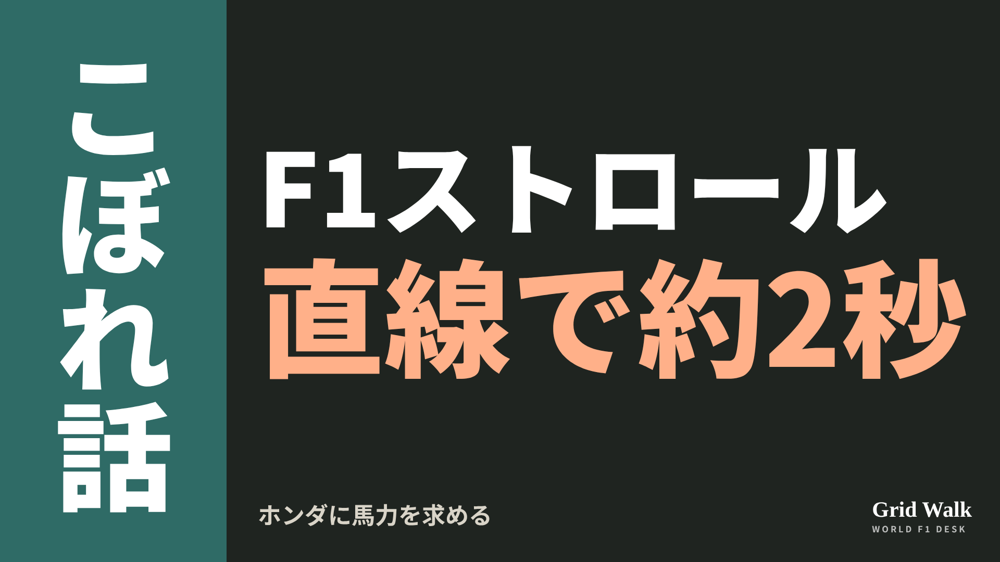<button class="cp dl" data-img="img/x_stroll-honda-two-seconds-20261125.png" data-name="x_stroll-honda-two-seconds-20261125.png">ダウンロード</button></li>
<li class="st"><div class="hd"><b>① noteをシェアするときの文</b></div><div class="bx" id="p1x0">ラスベガスGPのあと、ストロールがホンダに直線で約2秒分の馬力を求めました。できると思うかと聞かれた答えは「分からない」。noteにまとめました #F1jp #ストロール #ホンダ</div><button class="cp" data-plain="p1x0">コピー</button></li>
<li class="st"><div class="hd"><b>② ①への返信</b></div><div class="bx" id="p1x1">ほかの海外記事も読みたい方は、F1 Grid Walkへ。
https://f1gridwalk.github.io/lens/stroll-honda-two-seconds-20261125/?utm_source=x&amp;utm_campaign=stroll-honda-two-seconds-20261125</div><button class="cp" data-plain="p1x1">コピー</button></li>
<li class="st"><div class="hd"><b>③ ②への返信</b></div><div class="bx" id="p1x2">毎日の海外F1ニュースは、日本語でこちらにまとめています。
https://f1gridwalk.github.io/</div><button class="cp" data-plain="p1x2">コピー</button></li>
</ol></section><section class="part" id="p2"><h2><span class="tag">OFF GRID</span>マクニッシュ「まだ取れる貴重な点が残っている」　アウディ、7位まで3点</h2><p class="sub">サイトに公開：12:09</p><ol class="steps">
<li class="st im"><div class="hd"><span class="no">1</span><b>見出し画像</b><em>画像</em></div>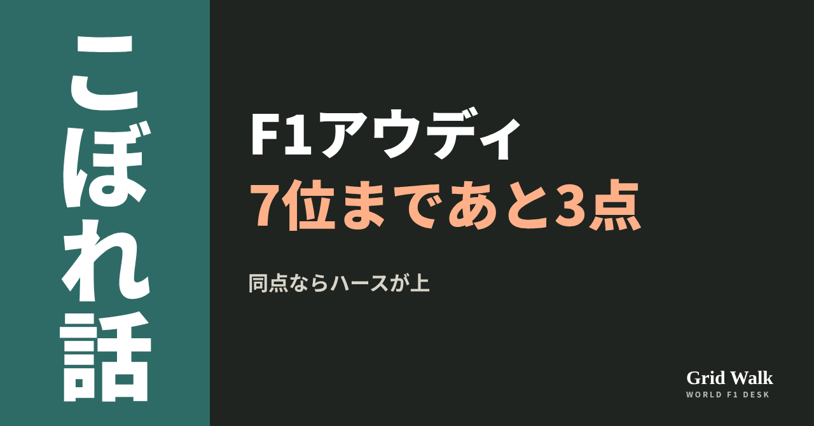<button class="cp dl" data-img="img/haas-audi-seventh-place-20261125.png" data-name="haas-audi-seventh-place-20261125_見出し画像.png">ダウンロード</button></li>
<li class="st"><div class="hd"><span class="no">2</span><b>タイトル</b></div><div class="bx" id="p2t">マクニッシュ「まだ取れる貴重な点が残っている」　アウディ、7位まで3点</div><button class="cp" data-plain="p2t">タイトルをコピー</button></li>
<li class="st"><div class="hd"><span class="no">3</span><b>本文</b></div><div class="bx tall" id="p2r"><p>残り2戦で3点。コンストラクターズ選手権の7位をめぐって、アウディがハースを追っています。F1公式の順位表では、ラスベガスGPを終えて、ハースが31点で7位、アウディが28点で8位です。ドイツのMotorsport-Total.comが11月24日、この争いを取り上げました（記事はformel1.deに掲載）。</p><p>同点のときの決まりのルールブックと、元の記事へのリンクはサイトで → <a href="https://f1gridwalk.github.io/lens/haas-audi-seventh-place-20261125/?utm_source=note&amp;utm_campaign=haas-audi-seventh-place-20261125">https://f1gridwalk.github.io/lens/haas-audi-seventh-place-20261125/?utm_source=note&amp;utm_campaign=haas-audi-seventh-place-20261125</a></p><p>F1の1年目のアウディ。レーシングディレクターのアラン・マクニッシュは、カタールGPを前にこう話しています。</p><blockquote><p>「選手権の7位を争うわれわれの戦いには、まだ取れる貴重な点が残っている」（マクニッシュ、Motorsport-Total.com／ドイツ）</p></blockquote><h2>開幕6戦では19点差</h2><p>記事によると、開幕6戦を終えた時点では、ハースが21点、アウディは2点でした。そこからハースが点を取ったのは、続く15戦のうち3戦だけ。アウディはたびたびトップ10に入り、差を詰めました。今の点と比べると、この15戦でハースは10点、アウディは26点を足したことになります。</p><p>ただ、3点差でも、アウディは残り2戦でハースより4点多く取らなければなりません。点が並ぶと、決勝で上の順位を取った回数を比べるためで（ルールブック https://f1gridwalk.github.io/deep/rules/championship-tiebreak/ ）、記事は、第2戦中国GPでオリバー・ベアマンが取った5位がハースに有利に働くと書いています。</p><h2>11回目の11位</h2><p>ラスベガスのF1公式の結果では、ニコ・ヒュルケンベルグが11位、ガブリエル・ボルトレートが12位。ハースもベアマンが13位、ラファエル・カマラが16位で、点はありません。記事によると、アウディの1台が入賞圏のすぐ外の11位で終えたのは、今季これで11回目です。サンパウロGPまでの10回は、11月13日のOFF GRID https://f1gridwalk.github.io/lens/audi-no-double-points-20261113/ で数えています。</p><blockquote><p>「ラスベガスは、接近戦の多い面白いレースだった」「持ち帰れる良い点もあるが、残り2戦の前に、まだ理解して改善しなければならない部分もある」（マクニッシュ、Motorsport-Total.com／ドイツ）</p></blockquote><p>ヒュルケンベルグは、ラスベガスでアウディが点争いに加われると示せたとして、こう続けました。</p><blockquote><p>「カタールでも、まさにそれを続けないといけない」「ルサイルは、GP2のころからずっと楽しいコースだ」（ヒュルケンベルグ、Motorsport-Total.com／ドイツ）</p></blockquote><p>記事によると、ヒュルケンベルグは2009年2月、このコースでGP2アジアのレースに勝っています。カタールでは、タイヤ1セットで走れるのは最大27周です（11月21日のOFF GRID https://f1gridwalk.github.io/lens/qatar-tyre-stint-limit-20261121/ ）。マクニッシュは、作戦とタイヤの管理が特に大事になると話しています。</p><h2>カマラの代わりに、アウディの育成選手</h2><p>争いには、もう一つのつながりがあります。記事によると、カタールのF2では、アウディの育成ドライバー、フレディ・スレーターがインビクタ・レーシングからF2にデビューし、カマラの代わりに走ります。カマラはF2の王座を狙わず、ハースがアウディの前にとどまるよう、全力を尽くすことになると記事は書いています。</p><blockquote><p>「フレディが予想より早くF2デビューの機会を得られて、とてもうれしい」（マクニッシュ、Motorsport-Total.com／ドイツ）</p></blockquote><p>編集部としては、ここ15戦の点の伸びはアウディのほうが大きいものの、同点では足りないという1点の重さが、最後まで効いてくると見ています。残りは第22戦カタールGP（11月27〜29日）と、第23戦アブダビGP（12月4〜6日）です（F1公式）。サイトの要約は https://f1gridwalk.github.io/news/de-motorsporttotal-audi-haas-platz-sieben/ にあります。</p><p><strong>残り2戦でハースを4点上回れるか。アウディは7位に上がれると思いますか？</strong></p><p>━━━━━━━━━━</p><p><strong>F1 Grid Walk では、世界のF1ニュースを毎日日本語でまとめています。</strong></p><p>海外の記事の要約を、毎日載せています。</p><p><a href="https://f1gridwalk.github.io/">https://f1gridwalk.github.io/</a></p><p>ほかの海外記事も読みたい方は、F1 Grid Walkへ。</p><p><a href="https://f1gridwalk.github.io/lens/haas-audi-seventh-place-20261125/">https://f1gridwalk.github.io/lens/haas-audi-seventh-place-20261125/</a></p><p>━━━━━━━━━━</p><p><a href="https://www.formel1.de/news/grand-prix-berichte/2026-11-24/drei-punkte-rueckstand-schnappt-audi-haas-rang-sieben-noch-weg">出典：Formel1.de（元はMotorsport-Total.com）（ドイツ）</a></p><p><a href="https://www.formula1.com/en/results/2026/team">出典：F1公式サイト（イギリス）</a></p><p><a href="https://www.formula1.com/en/results/2026/races/1300/las-vegas/race-result">出典：F1公式サイト（イギリス）</a></p><p><a href="https://www.formula1.com/en/results/2026/races/1280/china/race-result">出典：F1公式サイト（イギリス）</a></p><p><a href="https://www.formula1.com/en/racing/2026">出典：F1公式サイト（イギリス）</a></p></div><button class="cp" data-rich="p2r">本文をコピー</button></li>
<li class="st"><div class="hd"><span class="no">4</span><b>ハッシュタグ</b></div><div class="bx" id="p2h">#F1 #F1jp #アウディ #ハース #ヒュルケンベルグ #カマラ #カタールGP #コンストラクターズ #F1こぼれ話 #OFFGRID</div><button class="cp" data-plain="p2h">タグをコピー</button></li>
</ol><h3 class="xh">X</h3><ol class="steps">
<li class="st im"><div class="hd"><b>X用の画像</b><em>画像</em></div>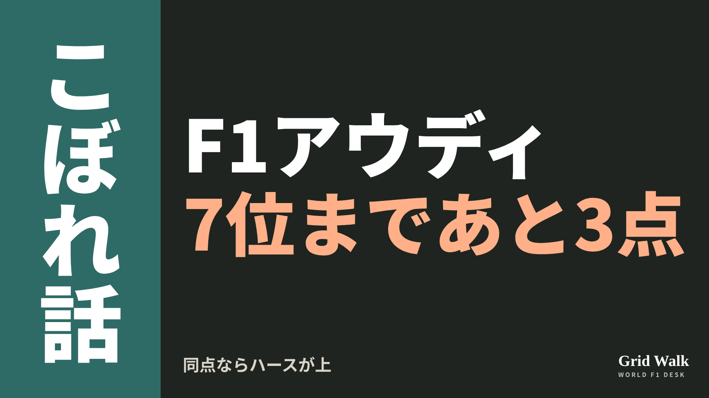<button class="cp dl" data-img="img/x_haas-audi-seventh-place-20261125.png" data-name="x_haas-audi-seventh-place-20261125.png">ダウンロード</button></li>
<li class="st"><div class="hd"><b>① noteをシェアするときの文</b></div><div class="bx" id="p2x0">コンストラクターズ7位のハースを、アウディが3点差で追っています。点が並べばハースが上なので、アウディは残り2戦でハースより4点多く必要です。noteにまとめました #F1jp #ハース #アウディ</div><button class="cp" data-plain="p2x0">コピー</button></li>
<li class="st"><div class="hd"><b>② ①への返信</b></div><div class="bx" id="p2x1">ほかの海外記事も読みたい方は、F1 Grid Walkへ。
https://f1gridwalk.github.io/lens/haas-audi-seventh-place-20261125/?utm_source=x&amp;utm_campaign=haas-audi-seventh-place-20261125</div><button class="cp" data-plain="p2x1">コピー</button></li>
<li class="st"><div class="hd"><b>③ ②への返信</b></div><div class="bx" id="p2x2">毎日の海外F1ニュースは、日本語でこちらにまとめています。
https://f1gridwalk.github.io/</div><button class="cp" data-plain="p2x2">コピー</button></li>
</ol></section><section class="part" id="p3"><h2><span class="tag">OFF GRID</span>フェラーリCEO、バスールと距離かと伊報道　解説者は「政治のチーム」</h2><p class="sub">サイトに公開：12:07</p><ol class="steps">
<li class="st im"><div class="hd"><span class="no">1</span><b>見出し画像</b><em>画像</em></div><button class="cp dl" data-img="img/vigna-vasseur-distance-20261125.png" data-name="vigna-vasseur-distance-20261125_見出し画像.png">ダウンロード</button></li>
<li class="st"><div class="hd"><span class="no">2</span><b>タイトル</b></div><div class="bx" id="p3t">フェラーリCEO、バスールと距離かと伊報道　解説者は「政治のチーム」</div><button class="cp" data-plain="p3t">タイトルをコピー</button></li>
<li class="st"><div class="hd"><span class="no">3</span><b>本文</b></div><div class="bx tall" id="p3r"><p>フェラーリのベネデット・ビーニャCEOが、身近な人たちにこう話したと、イタリアのCorriere della Seraが報じました。ドイツのF1-Insiderが11月24日に伝えています。</p><p>ラスベガスGPでの接触のあとのコラムと、元の記事へのリンクはサイトで → <a href="https://f1gridwalk.github.io/lens/vigna-vasseur-distance-20261125/?utm_source=note&amp;utm_campaign=vigna-vasseur-distance-20261125">https://f1gridwalk.github.io/lens/vigna-vasseur-distance-20261125/?utm_source=note&amp;utm_campaign=vigna-vasseur-distance-20261125</a></p><blockquote><p>「こうしたことに対処しなければならないマネージャーたちがいる」（ビーニャ、Corriere della Sera／イタリア、F1-Insider／ドイツが紹介）</p></blockquote><p>F1-Insiderによると、ビーニャCEOはだれの名前も出していません。それでもイタリアでは、この言葉はフレデリック・バスール代表をはっきり指したものと受け取られているといいます。</p><p>きっかけは、ラスベガスGPの38周目です。F1-Insiderによると、シャルル・ルクレールとルイス・ハミルトンが接触してハミルトンがスピンし、ルクレールに10秒加算が出ました。F1公式の結果では、ハミルトンは7位、ルクレールは10位・1点でした。代表と2人のレース直後の言葉は https://f1gridwalk.github.io/lens/ferrari-leclerc-hamilton-contact-20261122/ で紹介しています。</p><h2>イタリアの各紙は、代表の力を問う</h2><p>F1-Insiderは、イタリアのほかの媒体の論調も伝えています。Corriere dello Sportは、仲たがいした2人のコンビを解消するか、2人のスターを再び抑えられる代表を置くかだとして、代表の交代にも触れました。Autosprintのアンドレア・コルドバーニは、問題の芯はドライバー2人だけでなく、ピットウォールの権威が失われたことにあると書いたといいます。イタリアのメディアによると、罰金も取りざたされています。</p><h2>オランダの2人は、上層部に矛先</h2><p>反対に、バスールをかばう声もあります。オランダのRacingNews365は11月24日、同社のポッドキャストでのティム・コロネルとルート・ディメルスのやりとりを伝えました。コロネルは、代表を替えるという話は行き過ぎだと見ています。</p><blockquote><p>「彼にはどうしようもないだろう？」「フェラーリでは、上の偉い人たちが勝負を決めている。レースチームというより、政治のチームだ」（コロネル、RacingNews365／オランダ）</p></blockquote><p>コロネルは、さらにこう続けました。</p><blockquote><p>「バスールに自由にやらせていたら、信じてくれ、ルクレールは軽いお説教ではなく、とても大きなお説教を受けていただろう」「でもバスールは、そのたびに上の偉い人たちに止められている」（コロネル、RacingNews365／オランダ）</p></blockquote><p>ディメルスは、パドックに少し花火を上げるならと、冗談まじりに元レッドブル代表のクリスチャン・ホーナーの名を挙げました。コロネルは、ハミルトンとはうまくいかないと退けました。ディメルス自身は、2人の序列を決めないことに問題があると見ています。</p><blockquote><p>「今は、2人ともナンバー1ではなく、ナンバー1.5だ」「選ぶことをしないから、毎回ばかげたことになる」（ディメルス、RacingNews365／オランダ）</p></blockquote><p>コロネルはこれに反対し、フェラーリの上の人たちは15年前にルクレールを選んでいると話しました。</p><p>編集部としては、ビーニャCEOの言葉がバスールに向けたものかどうかは、本人が名前を出していない以上、まだわからないと見ています。それでも、イタリアでは代表の力の弱さが、オランダでは上からの口出しが問題にされ、同じ混乱を正反対の側から見ているのが興味深いところです。今季は残りカタール（11月27〜29日）とアブダビ（12月4〜6日）の2戦です。</p><p><strong>フェラーリの混乱、まず変わるべきなのは代表だと思いますか、それとも上層部だと思いますか？</strong></p><p>━━━━━━━━━━</p><p><strong>F1 Grid Walk では、世界のF1ニュースを毎日日本語でまとめています。</strong></p><p>海外の記事の要約を、毎日載せています。</p><p><a href="https://f1gridwalk.github.io/">https://f1gridwalk.github.io/</a></p><p>ほかの海外記事も読みたい方は、F1 Grid Walkへ。</p><p><a href="https://f1gridwalk.github.io/lens/vigna-vasseur-distance-20261125/">https://f1gridwalk.github.io/lens/vigna-vasseur-distance-20261125/</a></p><p>━━━━━━━━━━</p><p><a href="https://f1-insider.com/formel-1-ferrari-boss-distanziert-vasseur-84218/">出典：F1-Insider（ドイツ）</a></p><p><a href="https://racingnews365.nl/felle-kritiek-op-ferrari-top-meer-een-politiek-team-dan-een-raceteam">出典：RacingNews365（オランダ）</a></p><p><a href="https://www.formula1.com/en/results/2026/races/1300/las-vegas/race-result">出典：F1公式サイト（イギリス）</a></p><p><a href="https://www.formula1.com/en/racing/2026">出典：F1公式サイト（イギリス）</a></p></div><button class="cp" data-rich="p3r">本文をコピー</button></li>
<li class="st"><div class="hd"><span class="no">4</span><b>ハッシュタグ</b></div><div class="bx" id="p3h">#F1 #F1jp #フェラーリ #ビーニャ #バスール #ルクレール #ハミルトン #カタールGP #F1こぼれ話 #OFFGRID</div><button class="cp" data-plain="p3h">タグをコピー</button></li>
</ol><h3 class="xh">X</h3><ol class="steps">
<li class="st im"><div class="hd"><b>X用の画像</b><em>画像</em></div>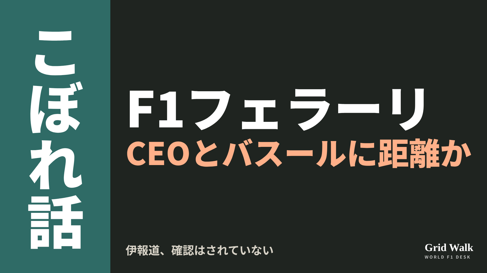<button class="cp dl" data-img="img/x_vigna-vasseur-distance-20261125.png" data-name="x_vigna-vasseur-distance-20261125.png">ダウンロード</button></li>
<li class="st"><div class="hd"><b>① noteをシェアするときの文</b></div><div class="bx" id="p3x0">フェラーリのビーニャCEOが、こうしたことはマネージャーが対処すべきだと漏らしたと伊Corriere della Seraが報道。オランダの解説者は、問題は代表の上にあると話しています。noteにまとめました #F1jp #フェラーリ</div><button class="cp" data-plain="p3x0">コピー</button></li>
<li class="st"><div class="hd"><b>② ①への返信</b></div><div class="bx" id="p3x1">ほかの海外記事も読みたい方は、F1 Grid Walkへ。
https://f1gridwalk.github.io/lens/vigna-vasseur-distance-20261125/?utm_source=x&amp;utm_campaign=vigna-vasseur-distance-20261125</div><button class="cp" data-plain="p3x1">コピー</button></li>
<li class="st"><div class="hd"><b>③ ②への返信</b></div><div class="bx" id="p3x2">毎日の海外F1ニュースは、日本語でこちらにまとめています。
https://f1gridwalk.github.io/</div><button class="cp" data-plain="p3x2">コピー</button></li>
</ol></section><section class="part" id="p4"><h2><span class="tag">OFF GRID</span>マクラーレンのステラ、V8に「進化の考え方で向き合うべき」</h2><p class="sub">サイトに公開：12:05</p><ol class="steps">
<li class="st im"><div class="hd"><span class="no">1</span><b>見出し画像</b><em>画像</em></div><button class="cp dl" data-img="img/stella-v8-evolution-20261125.png" data-name="stella-v8-evolution-20261125_見出し画像.png">ダウンロード</button></li>
<li class="st"><div class="hd"><span class="no">2</span><b>タイトル</b></div><div class="bx" id="p4t">マクラーレンのステラ、V8に「進化の考え方で向き合うべき」</div><button class="cp" data-plain="p4t">タイトルをコピー</button></li>
<li class="st"><div class="hd"><span class="no">3</span><b>本文</b></div><div class="bx tall" id="p4r"><p>F1のエンジンが2030年からV8になる方向だと聞いて、2006〜2013年のV8時代（ https://f1gridwalk.github.io/deep/rules/v8-era/ ）を思い浮かべる人もいるかもしれません。マクラーレンのチーム代表アンドレア・ステラは、V8を昔のエンジンの考え方への逆戻りと受け取るのは誤解だと話したと、ドイツのMotorsport-Total.comが11月24日に伝えました。サイトの要約は https://f1gridwalk.github.io/news/de-motorsporttotal-stella-v8-evolution/ にあります。</p><p>元の記事とFIAの発表文へのリンク、V8時代や今季の追い抜きの仕組みの用語解説はサイトで → <a href="https://f1gridwalk.github.io/lens/stella-v8-evolution-20261125/?utm_source=note&amp;utm_campaign=stella-v8-evolution-20261125">https://f1gridwalk.github.io/lens/stella-v8-evolution-20261125/?utm_source=note&amp;utm_campaign=stella-v8-evolution-20261125</a></p><blockquote><p>「V8には、進化の考え方で向き合うべきだと思う」「V8はただ気筒が8つあるだけだとしても、F1では革新と技術をもたらす」「F1の外の技術にも役立つはずだ。ノウハウはどんどん良くなっていくから」（ステラ、Motorsport-Total.com／ドイツ）</p></blockquote><h2>合意したのは枠組みまで</h2><p>FIAは11月20日、FIA、FOM、チーム、パワーユニットメーカーが、2030年からのパワーユニットの技術的な枠組みに全会一致で合意したと発表しました。2.1リッターのV8ターボで、ハイブリッドは限られたものにし、今のパワーユニットの寸法などの一部を引き継ぎます。最終的な規則の枠組みは発表の翌月に上海で開く世界モータースポーツ評議会（ https://f1gridwalk.github.io/deep/rules/wmsc/ ）に出され、規則の変更はすべて評議会の承認が条件です（FIA）。</p><blockquote><p>「知っているかぎりでは、規則はハイブリッドの要素のいくつかと、ターボなども残す」「おもしろいパワーユニットの形になると思う」（ステラ、Motorsport-Total.com／ドイツ）</p></blockquote><p>記事によると、ステラが楽しみにしているのは、メーカーがV8という古典的な形から何を引き出すかだといいます。記事は、F1が2014年からのターボハイブリッド時代の経験を生かせるとも書いています（ https://f1gridwalk.github.io/deep/rules/hybrid-era/ ）。</p><h2>DRSと電気、両方で抜く</h2><p>今季の学びに挙げたのは、追い抜き方です。2025年まであったDRS（ https://f1gridwalk.github.io/deep/rules/drs/ ）は今季なくなり、前の車に近づいた車が電気の力を多く使えるオーバーテイクモード（ https://f1gridwalk.github.io/deep/rules/overtake-mode/ ）に代わりました。</p><blockquote><p>「今年は、違うやり方で追い抜くことを学んだ」「DRSで抜くことに慣れていたけれど、今はパワーユニットの力で抜くことが多くなった」「新しい規則に移るときには、その2つを組み合わせられる」（ステラ、Motorsport-Total.com／ドイツ）</p></blockquote><p>記事は、ステラにとってそれが筋の通った進化だと伝えています。どんな形で組み合わせるのかは書かれておらず、FIAの発表文も追い抜きの仕組みには触れていません。</p><h2>エンジンと車体は同じ時間で</h2><p>もうひとつの注意は、規則を決める順番です。記事によると、2026年の規則は、まずパワーユニットの規則が作られ、車体の規則はあとから続きました。新しい規則はシーズンの初めから多くの批判を受け、夏には2027年の規則変更が決まりました（ https://f1gridwalk.github.io/deep/rules/regulations-2027/ ）。</p><blockquote><p>「2026年の規則で、パワーユニットと車体は同じ時間の枠の中で開発を進めなければならないと、あらためて学んだ」「片方がもう片方より先に進んでいると、2つを組み合わせるのが難しくなることがある」（ステラ、Motorsport-Total.com／ドイツ）</p></blockquote><p>記事によると、ステラが大事だと見ているのは、全体をまとめて考える計画です。FIAの発表文は、新しいパワーユニットを、より軽く、より機敏で、ドライバーの腕と接戦をより重んじる車体と組み合わせるとしています（FIA）。</p><p>編集部としては、V8という言葉より、車体の規則がパワーユニットと同じ速さで固まるかどうかが、2030年の車の出来を左右すると見ています。発表文が車体について示したのは、まだ方向だけだからです。</p><p><strong>2030年のV8のF1。あなたは、昔のV8時代に近い車と、まったく新しい車の、どちらを見たいですか？</strong></p><p>━━━━━━━━━━</p><p><strong>F1 Grid Walk では、世界のF1ニュースを毎日日本語でまとめています。</strong></p><p>海外の記事の要約を、毎日載せています。</p><p><a href="https://f1gridwalk.github.io/">https://f1gridwalk.github.io/</a></p><p>ほかの海外記事も読みたい方は、F1 Grid Walkへ。</p><p><a href="https://f1gridwalk.github.io/lens/stella-v8-evolution-20261125/">https://f1gridwalk.github.io/lens/stella-v8-evolution-20261125/</a></p><p>━━━━━━━━━━</p><p><a href="https://www.motorsport-total.com/formel-1/news/warum-die-neuen-v8-motoren-der-formel-1-ganz-anders-werden-koennten-26112405">出典：Motorsport-Total.com（ドイツ）</a></p><p><a href="https://www.fia.com/news/v8-future-unanimous-agreement-reached-fias-2030-formula-1-power-unit-framework">出典：FIA（国際）</a></p></div><button class="cp" data-rich="p4r">本文をコピー</button></li>
<li class="st"><div class="hd"><span class="no">4</span><b>ハッシュタグ</b></div><div class="bx" id="p4h">#F1 #F1jp #マクラーレン #ステラ #V8 #パワーユニット #2030年 #F1こぼれ話 #OFFGRID</div><button class="cp" data-plain="p4h">タグをコピー</button></li>
</ol><h3 class="xh">X</h3><ol class="steps">
<li class="st im"><div class="hd"><b>X用の画像</b><em>画像</em></div>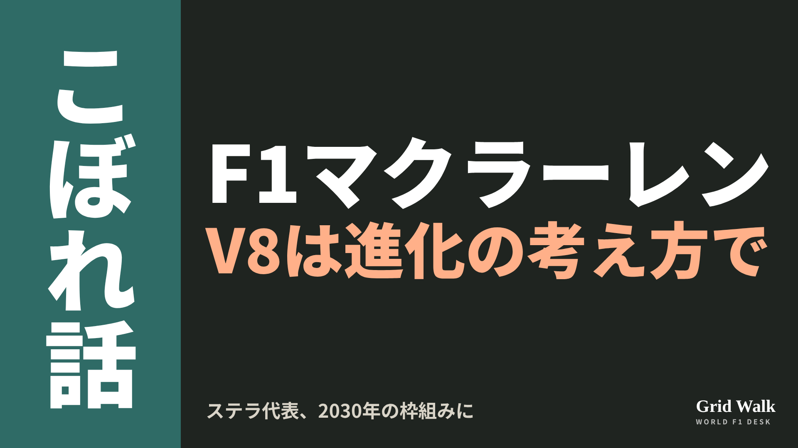<button class="cp dl" data-img="img/x_stella-v8-evolution-20261125.png" data-name="x_stella-v8-evolution-20261125.png">ダウンロード</button></li>
<li class="st"><div class="hd"><b>① noteをシェアするときの文</b></div><div class="bx" id="p4x0">2030年からのV8ターボの枠組みは、上海の評議会の承認待ち。マクラーレンのステラ代表は「進化の考え方で向き合うべき」と話しています。noteにまとめました #F1jp #マクラーレン #V8</div><button class="cp" data-plain="p4x0">コピー</button></li>
<li class="st"><div class="hd"><b>② ①への返信</b></div><div class="bx" id="p4x1">ほかの海外記事も読みたい方は、F1 Grid Walkへ。
https://f1gridwalk.github.io/lens/stella-v8-evolution-20261125/?utm_source=x&amp;utm_campaign=stella-v8-evolution-20261125</div><button class="cp" data-plain="p4x1">コピー</button></li>
<li class="st"><div class="hd"><b>③ ②への返信</b></div><div class="bx" id="p4x2">毎日の海外F1ニュースは、日本語でこちらにまとめています。
https://f1gridwalk.github.io/</div><button class="cp" data-plain="p4x2">コピー</button></li>
</ol></section><section class="part" id="p5"><h2><span class="tag">OFF GRID</span>フェルスタッペン、デイトナ24時間を模索か　「絶対にやりたいレース」</h2><p class="sub">サイトに公開：12:03</p><ol class="steps">
<li class="st im"><div class="hd"><span class="no">1</span><b>見出し画像</b><em>画像</em></div>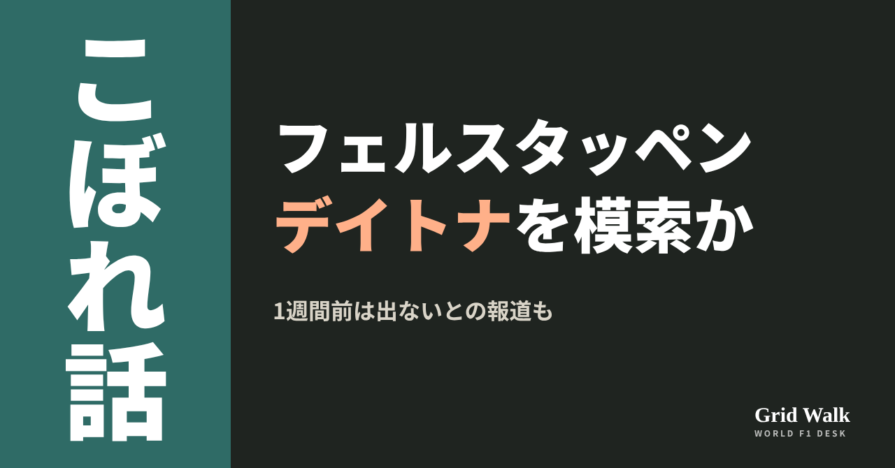<button class="cp dl" data-img="img/verstappen-daytona-2027-20261125.png" data-name="verstappen-daytona-2027-20261125_見出し画像.png">ダウンロード</button></li>
<li class="st"><div class="hd"><span class="no">2</span><b>タイトル</b></div><div class="bx" id="p5t">フェルスタッペン、デイトナ24時間を模索か　「絶対にやりたいレース」</div><button class="cp" data-plain="p5t">タイトルをコピー</button></li>
<li class="st"><div class="hd"><span class="no">3</span><b>本文</b></div><div class="bx tall" id="p5r"><p>ドイツのF1-Insider.comは11月24日、マックス・フェルスタッペンが2027年1月のデイトナ24時間に出ることを考えていると報じました。同誌によると、ニュルブルクリンク24時間と同じメルセデスAMG GT3で走るつもりで、アメリカのチームを探しているといいます。ただ、チームの名前は出ておらず、出場が決まったわけではないとも書いています。</p><p>F1-Insider.com、Motorsport.com、GPblogの記事へのリンクと、デイトナ24時間の用語解説はサイトで → <a href="https://f1gridwalk.github.io/lens/verstappen-daytona-2027-20261125/?utm_source=note&amp;utm_campaign=verstappen-daytona-2027-20261125">https://f1gridwalk.github.io/lens/verstappen-daytona-2027-20261125/?utm_source=note&amp;utm_campaign=verstappen-daytona-2027-20261125</a></p><h2>本人は、できるかどうかを調べている</h2><p>本人の言葉は、ラスベガスでのオランダのメディアの取材の場で、Motorsport.comに話したものです。来年の冬にデイトナを走る可能性を聞かれ、こう答えました。</p><blockquote><p>「できるかどうかは調べている。でも今のところ、あの訪問はレッドブルの撮影のほうが目的だった」「そう、あれは絶対にやりたいレースだ」（フェルスタッペン、Motorsport.com）</p></blockquote><blockquote><p>「うん、あのレースなら、F1を走っているあいだにも間違いなくありえる。そうなってほしいね」（フェルスタッペン、Motorsport.com）</p></blockquote><p>Motorsport.comによると、2027年の大会は1月28〜31日で、F1の冬休みの時期に当たります。GT3の車で出るなら、デイトナではGTDプロのクラスになります。</p><h2>ル・マンはハイパーカーで</h2><p>Motorsport.comは、2027年のル・マンには出ない考えを本人が示したと伝えています。</p><blockquote><p>「ル・マンは、本当にハイパーカーでしか出たくない」（フェルスタッペン、Motorsport.com）</p></blockquote><p>GT3で走るデイトナについては、こう続けました。</p><blockquote><p>「簡単だとは言いたくない。でも、ハイパーカーよりは少し段取りがしやすい」（フェルスタッペン、Motorsport.com）</p></blockquote><p>同じ記事は、2027年のニュルブルクリンク24時間にも出る見込みだが、準備のレースのNLSがF1のグランプリと重なると伝えています。本人は笑いながら、こう話しました。</p><blockquote><p>「幸い、あのコースはもう知っているからね！」（フェルスタッペン、Motorsport.com）</p></blockquote><h2>1週間前は、出ないという報道</h2><p>オランダのGPblogは11月19日、フェルスタッペンは来年のデイトナ24時間に出ないと報じていました。前の週、デイトナのサーキットの近くの飛行場で彼の飛行機が見られ、SNSで出場のうわさが広がったことを受けた記事です。GPblogによると、本人はViaplayに、近くにいた理由をこう説明しました。</p><blockquote><p>「レッドブルと、レッドブル・ファミリーのほかのドライバーたちとの撮影の日があった」「だから、飛んでいくのにちょうどよかったんだ」（フェルスタッペン、Viaplay、GPblog／オランダ経由）</p></blockquote><p>撮影が目的だったという説明は、Motorsport.comの記事と同じです。違うのは、GPblogが出場しないと書いたのに対し、11月23日のMotorsport.comと24日のF1-Insider.comは、可能性を調べている段階だと伝えている点です。サイトの要約は https://f1gridwalk.github.io/news/de-f1insider-verstappen-daytona-2027/ にあります。</p><p>F1-Insider.comは、新しいシーズンへの準備との兼ね合いも課題に挙げています。F1公式によると、2027年のプレシーズンテストは2月24〜27日のバーレーンです。編集部としては、決め手はレースそのものより、1月末の24時間をF1の準備とどう並べるかだと見ています。デイトナ24時間の歴史は、ルールブック https://f1gridwalk.github.io/deep/rules/daytona-24-hours/ で。</p><p><strong>F1のシーズン前の1月に、フェルスタッペンが24時間レースを走る。あなたは見てみたいですか？</strong></p><p>━━━━━━━━━━</p><p><strong>F1 Grid Walk では、世界のF1ニュースを毎日日本語でまとめています。</strong></p><p>海外の記事の要約を、毎日載せています。</p><p><a href="https://f1gridwalk.github.io/">https://f1gridwalk.github.io/</a></p><p>ほかの海外記事も読みたい方は、F1 Grid Walkへ。</p><p><a href="https://f1gridwalk.github.io/lens/verstappen-daytona-2027-20261125/">https://f1gridwalk.github.io/lens/verstappen-daytona-2027-20261125/</a></p><p>━━━━━━━━━━</p><p><a href="https://f1-insider.com/formel-1-verstappen-plant-daytona-mercedes-84215/">出典：F1-Insider.com（ドイツ）</a></p><p><a href="https://sports.yahoo.com/articles/max-verstappen-reveals-considering-2027-174225884.html">出典：Motorsport.com（Yahoo Sports転載）（イギリス）</a></p><p><a href="https://www.gpblog.com/nl/nieuws/max-verstappen-doet-niet-mee-aan-iconische-24-uursrace">出典：GPblog（オランダ語版）（オランダ）</a></p><p><a href="https://www.formula1.com/en/latest/article/formula-1-reveals-calendar-for-2027-season-with-10-sprint-events.5J8ePLyjRuMyWEIDNUKgY4">出典：F1公式サイト（イギリス）</a></p></div><button class="cp" data-rich="p5r">本文をコピー</button></li>
<li class="st"><div class="hd"><span class="no">4</span><b>ハッシュタグ</b></div><div class="bx" id="p5h">#F1 #F1jp #フェルスタッペン #デイトナ24時間 #GT3 #メルセデスAMG #ル・マン #2027年 #F1こぼれ話 #OFFGRID</div><button class="cp" data-plain="p5h">タグをコピー</button></li>
</ol><h3 class="xh">X</h3><ol class="steps">
<li class="st im"><div class="hd"><b>X用の画像</b><em>画像</em></div>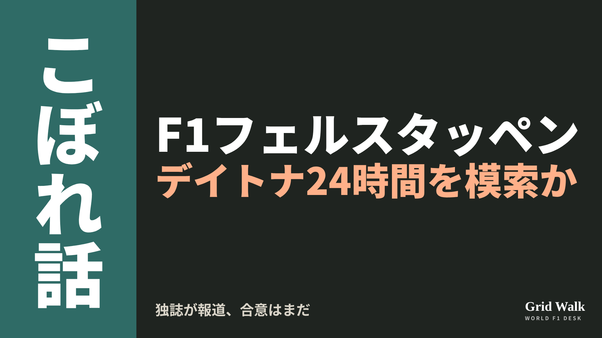<button class="cp dl" data-img="img/x_verstappen-daytona-2027-20261125.png" data-name="x_verstappen-daytona-2027-20261125.png">ダウンロード</button></li>
<li class="st"><div class="hd"><b>① noteをシェアするときの文</b></div><div class="bx" id="p5x0">フェルスタッペンが2027年のデイトナ24時間を考えていると、独F1-Insider.comが報道。本人もできるかどうか調べていると話しています。noteにまとめました #F1jp #フェルスタッペン</div><button class="cp" data-plain="p5x0">コピー</button></li>
<li class="st"><div class="hd"><b>② ①への返信</b></div><div class="bx" id="p5x1">ほかの海外記事も読みたい方は、F1 Grid Walkへ。
https://f1gridwalk.github.io/lens/verstappen-daytona-2027-20261125/?utm_source=x&amp;utm_campaign=verstappen-daytona-2027-20261125</div><button class="cp" data-plain="p5x1">コピー</button></li>
<li class="st"><div class="hd"><b>③ ②への返信</b></div><div class="bx" id="p5x2">毎日の海外F1ニュースは、日本語でこちらにまとめています。
https://f1gridwalk.github.io/</div><button class="cp" data-plain="p5x2">コピー</button></li>
</ol></section><section class="part" id="p6"><h2><span class="tag">OFF GRID</span>アロンソ、インディカーのバルセロナ戦へ？　パロウ「7月18日を準備中」</h2><p class="sub">サイトに公開：12:01</p><ol class="steps">
<li class="st im"><div class="hd"><span class="no">1</span><b>見出し画像</b><em>画像</em></div>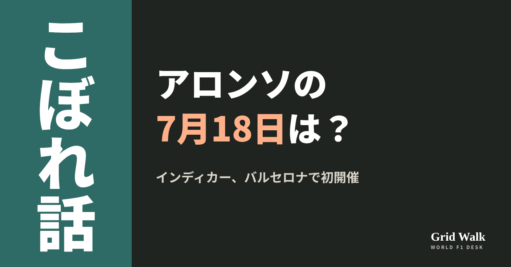<button class="cp dl" data-img="img/alonso-indycar-barcelona-20261125.png" data-name="alonso-indycar-barcelona-20261125_見出し画像.png">ダウンロード</button></li>
<li class="st"><div class="hd"><span class="no">2</span><b>タイトル</b></div><div class="bx" id="p6t">アロンソ、インディカーのバルセロナ戦へ？　パロウ「7月18日を準備中」</div><button class="cp" data-plain="p6t">タイトルをコピー</button></li>
<li class="st"><div class="hd"><span class="no">3</span><b>本文</b></div><div class="bx tall" id="p6r"><p>インディカーで4度王者になったスペインのアレックス・パロウが、フェルナンド・アロンソと並んで大きく笑う写真をインスタグラムに投稿しました。添えた言葉は、次のひと言です。オランダのRacingNews365が11月24日に伝えました。</p><p>元の記事とインディカーの発表へのリンク、ラスベガスGPのアストンマーティンとアロンソのダカールのコラムへの案内はサイトで → <a href="https://f1gridwalk.github.io/lens/alonso-indycar-barcelona-20261125/?utm_source=note&amp;utm_campaign=alonso-indycar-barcelona-20261125">https://f1gridwalk.github.io/lens/alonso-indycar-barcelona-20261125/?utm_source=note&amp;utm_campaign=alonso-indycar-barcelona-20261125</a></p><blockquote><p>「7月18日を準備中」（パロウの投稿、RacingNews365／オランダ）</p></blockquote><p>RacingNews365によると、この投稿ですぐに、アロンソが来年インディカーのバルセロナ戦に出るのではないか、といううわさが立ちました。アロンソはこの投稿にGIFで返し、同サイトはその返事を、そうした計画が本気であることをうかがわせるものだと書いています。GIFに何が映っていたかは、記事には書かれていません。そして記事は、実際に実現するかどうかはまだ分からない、と結んでいます。今はまだ、うわさの段階です。サイトの要約は https://f1gridwalk.github.io/news/nl-rn365-alonso-palou-barcelona/ にあります。</p><h2>7月18日、F1はお休み</h2><p>F1公式の2027年のカレンダーでは、7月はオーストリアGPが9〜11日、ベルギーGPが23〜25日です。そのあいだの18日を含む週末に、F1のレースはありません。</p><p>その日に走るのがインディカーです。インディカー公式は10月23日、2027年にバルセロナ郊外モンメロのカタロニア・サーキットで、初めてのバルセロナGPを開くと発表しました。決勝は7月18日の日曜日です。発表によると、シリーズがヨーロッパで走るのは、オランダのアッセンでの2007年以来。北米の外でのレースも2013年以来になります。RacingNews365は、そのアッセンのレースはチャンプカーだったと書き添えています。インディカーの車やコースの仕組みは、ルールブック https://f1gridwalk.github.io/deep/rules/indycar/ にまとめています。</p><h2>最後の周にピットへ入った週末のあとで</h2><p>RacingNews365は、2026年のアロンソは何よりドラマの多い1年だったと書いています。アストンマーティンのAMR26と、同サイトが欠点が多いと表すホンダのパワーユニットの組み合わせで、集団のずっと後ろを走ってきたからです。ラスベガスGPでは最後の周に車をピットレーンに入れ、本人はエンジンの問題だと話したと伝えています。F1公式の結果では、アロンソは50周のうち49周でDNF（リタイア）、19位に数えられ、点は0でした。その夜のチームの説明は、コラム https://f1gridwalk.github.io/lens/honda-vegas-right-direction-20261123/ で紹介しています。</p><p>一方で、F1の外の大きなレースでの経歴は長いドライバーです。RacingNews365は、アロンソがル・マン24時間で2度勝ち、インディ500でも優勝に迫ったことがあると振り返っています。2027年1月のダカール・ラリーに出ることは、アストンマーティンがすでに発表しています（コラム https://f1gridwalk.github.io/lens/alonso-dakar-2027-20261117/ ）。</p><p>編集部としては、今の時点で確かなのは、2027年7月18日にF1の日程が空いていて、その日にスペインでインディカーが走る、という2つだけだと見ています。写真とGIFは期待をふくらませるには十分ですが、参戦の発表ではありません。もし実現すれば、1月のダカールに続くF1の外での挑戦で、しかも今度はF1のシーズンの最中です。続きは、アロンソやチーム、シリーズからの正式な知らせを待つことになりそうです。</p><p><strong>7月18日、アロンソがバルセロナでインディカーを走るとしたら、見てみたいですか？</strong></p><p>━━━━━━━━━━</p><p><strong>F1 Grid Walk では、世界のF1ニュースを毎日日本語でまとめています。</strong></p><p>海外の記事の要約を、毎日載せています。</p><p><a href="https://f1gridwalk.github.io/">https://f1gridwalk.github.io/</a></p><p>ほかの海外記事も読みたい方は、F1 Grid Walkへ。</p><p><a href="https://f1gridwalk.github.io/lens/alonso-indycar-barcelona-20261125/">https://f1gridwalk.github.io/lens/alonso-indycar-barcelona-20261125/</a></p><p>━━━━━━━━━━</p><p><a href="https://racingnews365.nl/alonso-voedt-nieuwe-geruchten-over-verrassend-avontuur-buiten-f1">出典：RacingNews365（オランダ語版）（オランダ）</a></p><p><a href="https://www.indycar.com/news/2026/10/10-23-barcelona-2027">出典：IndyCar公式サイト（アメリカ）</a></p><p><a href="https://www.formula1.com/en/results/2026/races/1300/las-vegas/race-result">出典：F1公式サイト（イギリス）</a></p><p><a href="https://www.formula1.com/en/racing/2027">出典：F1公式サイト（イギリス）</a></p></div><button class="cp" data-rich="p6r">本文をコピー</button></li>
<li class="st"><div class="hd"><span class="no">4</span><b>ハッシュタグ</b></div><div class="bx" id="p6h">#F1 #F1jp #アロンソ #インディカー #アレックスパロウ #アストンマーティン #バルセロナ #カタールGP #F1こぼれ話 #OFFGRID</div><button class="cp" data-plain="p6h">タグをコピー</button></li>
</ol><h3 class="xh">X</h3><ol class="steps">
<li class="st im"><div class="hd"><b>X用の画像</b><em>画像</em></div>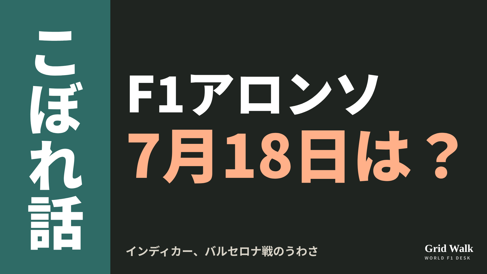<button class="cp dl" data-img="img/x_alonso-indycar-barcelona-20261125.png" data-name="x_alonso-indycar-barcelona-20261125.png">ダウンロード</button></li>
<li class="st"><div class="hd"><b>① noteをシェアするときの文</b></div><div class="bx" id="p6x0">パロウがアロンソとの写真に「7月18日を準備中」。インディカーのバルセロナ戦に出るのでは、といううわさを蘭RacingNews365が伝えました。実現するかはまだ分かりません。noteにまとめました #F1jp #アロンソ</div><button class="cp" data-plain="p6x0">コピー</button></li>
<li class="st"><div class="hd"><b>② ①への返信</b></div><div class="bx" id="p6x1">ほかの海外記事も読みたい方は、F1 Grid Walkへ。
https://f1gridwalk.github.io/lens/alonso-indycar-barcelona-20261125/?utm_source=x&amp;utm_campaign=alonso-indycar-barcelona-20261125</div><button class="cp" data-plain="p6x1">コピー</button></li>
<li class="st"><div class="hd"><b>③ ②への返信</b></div><div class="bx" id="p6x2">毎日の海外F1ニュースは、日本語でこちらにまとめています。
https://f1gridwalk.github.io/</div><button class="cp" data-plain="p6x2">コピー</button></li>
</ol></section><section class="part" id="p7"><h2><span class="tag">OFF GRID</span>同じ予選で時速335→351km　ラスベガスのスリップを物理で解く</h2><p class="sub">サイトに公開：11:59</p><ol class="steps">
<li class="st im"><div class="hd"><span class="no">1</span><b>見出し画像</b><em>画像</em></div>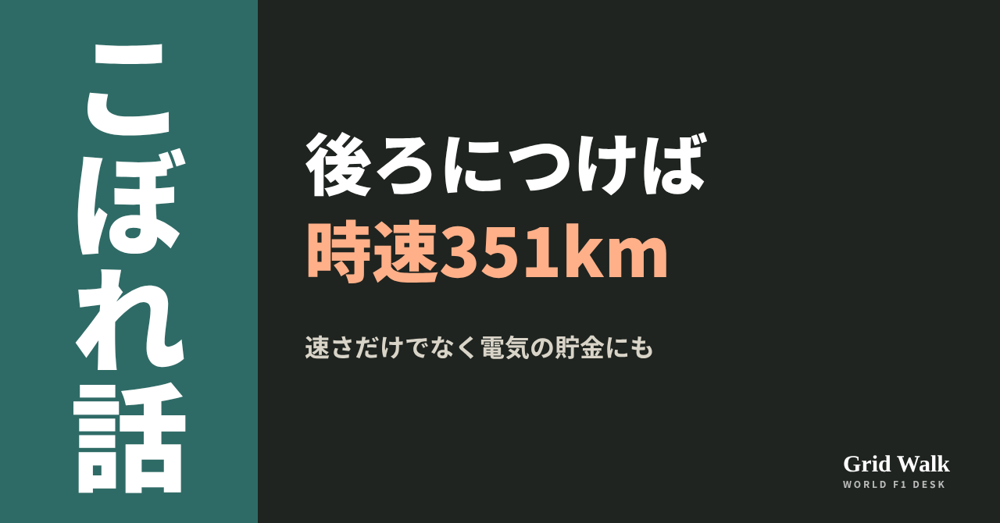<button class="cp dl" data-img="img/slipstream-physics-vegas-20261125.png" data-name="slipstream-physics-vegas-20261125_見出し画像.png">ダウンロード</button></li>
<li class="st"><div class="hd"><span class="no">2</span><b>タイトル</b></div><div class="bx" id="p7t">同じ予選で時速335→351km　ラスベガスのスリップを物理で解く</div><button class="cp" data-plain="p7t">タイトルをコピー</button></li>
<li class="st"><div class="hd"><span class="no">3</span><b>本文</b></div><div class="bx tall" id="p7r"><p>第21戦ラスベガスGPでは、前の車の後ろにつくだけで、直線の速さが大きく変わりました。その効き目を物理と数字で解いた記事を、イタリアのFormula1.itが11月24日に載せています。サイトの要約は https://f1gridwalk.github.io/news/it-formula1it-scia-fisica-las-vegas/ にあります。</p><p>数字を出した元の記事と、スリップストリームなど用語の解説へのリンクはサイトで → <a href="https://f1gridwalk.github.io/lens/slipstream-physics-vegas-20261125/?utm_source=note&amp;utm_campaign=slipstream-physics-vegas-20261125">https://f1gridwalk.github.io/lens/slipstream-physics-vegas-20261125/?utm_source=note&amp;utm_campaign=slipstream-physics-vegas-20261125</a></p><h2>抵抗は速さの2乗、要る力は3乗</h2><p>記事によると、空気の抵抗は速さの2乗で増え、それに打ち勝つための力は3乗で増えます。時速300kmから330kmへ1割上げるには、およそ33%多くの力が要ります。前の車は空気を後ろへ押し出すので、すぐ後ろの車には遅い空気が当たり、抵抗が減ります。これがスリップストリームです（用語は https://f1gridwalk.github.io/deep/rules/slipstream/ で）。</p><p>簡単なモデルでの目安もあります。抵抗に勝つのに500kWが要る速さで、抵抗が1割減れば50kW、2割減れば100kW（約136馬力）の節約になります。前に車がいないときの釣り合いの速さを時速320kmとすると、抵抗が2割減れば計算上は時速344.7km、2割5分減れば352.2kmです。コースの長さやギア比を入れない理論の数字で、コーナーで車を押さえつける力が減る代わりに、長い直線のラスベガスでは得になると記事は見ています。</p><h2>同じ予選の2回で、時速16kmの差</h2><p>例に挙がるのが、予選で最速だったメルセデスのアンドレア・キミ・アントネッリです（F1公式の結果）。記事によると、アントネッリはアービッド・リンドブラッドの約1.5秒後ろからアタックに入り、そのリンドブラッドもさらに前の車の後ろにいました。この1周と5グリッド降格のことは、コラム https://f1gridwalk.github.io/lens/wolff-tow-lap-never-seen-20261122/ で。</p><p>記事は、アントネッリのQ3の2回のアタックを比べています。ストリップ沿いの最高速は時速335kmと351km、5コーナーの手前は319kmと329km、最後の直線は311kmと327kmで、差は時速10〜16kmです。ただ、この比べ方では空力の効果と電気の効果を切り分けきれないとも書いています。決勝については、記事が紹介するテレメトリーの分析で、ストリップ沿いの最高速の中央値が前に車がいないとき時速326km、前の車との差が1〜2.5秒で335km、1秒未満で345kmでした。</p><h2>速さだけでなく、電気の貯金にも</h2><p>記事が強調するのは今年の電気の規則です。MGU-Kの出力は昨年の120kWから350kWに上がり、MGU-Hはなくなりました（ https://f1gridwalk.github.io/deep/rules/mgu-k/ ）。後ろについて抵抗が減れば、そのぶん電気を残して、あとで使えます。記事が引くFIAの資料では、オーバーテイクモードで、ふだん時速290kmを超えると落ちる350kWの出力を時速約337.5kmまで保て、1周に使える電気も8MJから8.5MJに増えます（ https://f1gridwalk.github.io/deep/rules/overtake-mode/ ）。</p><p>記事は、マクラーレンのアンドレア・ステラ代表が、今年はスリップの効果が大きく、周りの車が多いほど大きくなると見ていると伝えています。ジョージ・ラッセルは予選後のFIAの会見で、どこまでがストレートモードの設定の効果で、どこまでが電気を長く出せることの効果なのか分からないと認めたといいます（ https://f1gridwalk.github.io/deep/rules/straight-corner-mode/ ）。</p><p>一方で記事は、今年の後流が2025年より空力の面で強いとは、まだはっきり言えないとし、性能と作戦の面での値打ちは大きくなったと書いています。</p><p>編集部としては、ラスベガスで見えたのは、後ろにつくことが直線の速さだけでなく、電気をためる手段にもなったことだと見ています。記事自身が、後流そのものが強くなったとは言い切っていないからです。追い抜きの数はコラム https://f1gridwalk.github.io/lens/vegas-overtake-record-20261123/ で。次は11月27〜29日の第22戦カタールGPです。</p><p><strong>前の車について電気をため、あとで一気に使う。今年のこの抜き方を、あなたは面白いと思いますか？</strong></p><p>━━━━━━━━━━</p><p><strong>F1 Grid Walk では、世界のF1ニュースを毎日日本語でまとめています。</strong></p><p>海外の記事の要約を、毎日載せています。</p><p><a href="https://f1gridwalk.github.io/">https://f1gridwalk.github.io/</a></p><p>ほかの海外記事も読みたい方は、F1 Grid Walkへ。</p><p><a href="https://f1gridwalk.github.io/lens/slipstream-physics-vegas-20261125/">https://f1gridwalk.github.io/lens/slipstream-physics-vegas-20261125/</a></p><p>━━━━━━━━━━</p><p><a href="https://www.formula1.it/news/34198/1/f1-quanto-vale-davvero-una-scia-la-fisica-spiega-il-caos-di-las-vegas">出典：Formula1.it（イタリア）</a></p><p><a href="https://www.formula1.com/en/results/2026/races/1300/las-vegas/qualifying">出典：F1公式サイト（イギリス）</a></p><p><a href="https://www.formula1.com/en/results/2026/races/1300/las-vegas/starting-grid">出典：F1公式サイト（イギリス）</a></p><p><a href="https://www.formula1.com/en/racing/2026">出典：F1公式サイト（イギリス）</a></p></div><button class="cp" data-rich="p7r">本文をコピー</button></li>
<li class="st"><div class="hd"><span class="no">4</span><b>ハッシュタグ</b></div><div class="bx" id="p7h">#F1 #F1jp #ラスベガスGP #スリップストリーム #アントネッリ #F1技術 #F1こぼれ話 #OFFGRID</div><button class="cp" data-plain="p7h">タグをコピー</button></li>
</ol><h3 class="xh">X</h3><ol class="steps">
<li class="st im"><div class="hd"><b>X用の画像</b><em>画像</em></div>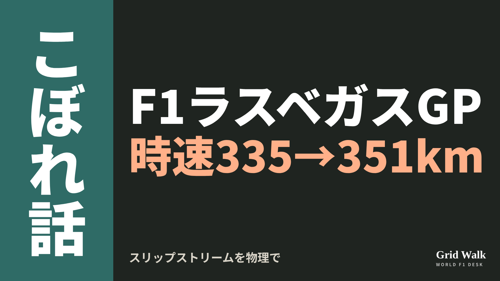<button class="cp dl" data-img="img/x_slipstream-physics-vegas-20261125.png" data-name="x_slipstream-physics-vegas-20261125.png">ダウンロード</button></li>
<li class="st"><div class="hd"><b>① noteをシェアするときの文</b></div><div class="bx" id="p7x0">ラスベガスGPの予選で、時速335kmから351kmへ。前の車の後ろにつく効き目を、伊Formula1.itが物理と数字で解きました。noteにまとめました #F1jp #ラスベガスGP</div><button class="cp" data-plain="p7x0">コピー</button></li>
<li class="st"><div class="hd"><b>② ①への返信</b></div><div class="bx" id="p7x1">ほかの海外記事も読みたい方は、F1 Grid Walkへ。
https://f1gridwalk.github.io/lens/slipstream-physics-vegas-20261125/?utm_source=x&amp;utm_campaign=slipstream-physics-vegas-20261125</div><button class="cp" data-plain="p7x1">コピー</button></li>
<li class="st"><div class="hd"><b>③ ②への返信</b></div><div class="bx" id="p7x2">毎日の海外F1ニュースは、日本語でこちらにまとめています。
https://f1gridwalk.github.io/</div><button class="cp" data-plain="p7x2">コピー</button></li>
</ol></section></main><script>
function done(b,msg){const t=b.dataset.t||b.textContent;b.dataset.t=t;b.classList.add('ok');b.textContent=msg||'コピーしました';setTimeout(()=>{b.classList.remove('ok');b.textContent=t},2000)}
function selectEl(el){const r=document.createRange();r.selectNodeContents(el);const s=getSelection();s.removeAllRanges();s.addRange(r)}
async function rich(el,b){
  try{await navigator.clipboard.write([new ClipboardItem({'text/html':new Blob([el.innerHTML],{type:'text/html'}),'text/plain':new Blob([el.innerText],{type:'text/plain'})})]);done(b);return}catch(e){}
  selectEl(el);let ok=false;try{ok=document.execCommand('copy')}catch(e){}
  if(ok){getSelection().removeAllRanges();done(b)}else{done(b,'選択しました。コピーしてください')}}
async function plain(el,b){
  try{await navigator.clipboard.writeText(el.innerText);done(b);return}catch(e){}
  selectEl(el);let ok=false;try{ok=document.execCommand('copy')}catch(e){}
  if(ok){getSelection().removeAllRanges();done(b)}else{done(b,'選択しました。コピーしてください')}}
let dlns=null;(async()=>{try{dlns=await window.claude?.use?.("downloads")}catch(e){dlns=null}})();
async function img(src,b){
  b.dataset.t=b.dataset.t||b.textContent;
  if(!dlns){try{dlns=await window.claude?.use?.("downloads")}catch(e){}}
  if(!dlns){b.textContent='ダウンロードできませんでした';setTimeout(()=>{b.textContent=b.dataset.t},3500);return}
  try{const blob=await fetch(src).then(r=>r.blob());b.textContent='保存の確認を開いています…';
    await dlns.save({filename:b.dataset.name,data:blob});done(b,'ダウンロードしました')}
  catch(e){const c=e&&e.code;b.textContent=c==='declined'?'キャンセルしました':c==='rate_limited'?'少し待ってからもう一度押してください':'ダウンロードできませんでした';setTimeout(()=>{b.textContent=b.dataset.t},3500)}}
document.querySelectorAll('.cp').forEach(b=>b.addEventListener('click',()=>{
  if(b.dataset.rich)rich(document.getElementById(b.dataset.rich),b);
  else if(b.dataset.plain)plain(document.getElementById(b.dataset.plain),b);
  else img(b.dataset.img,b)}));
</script>